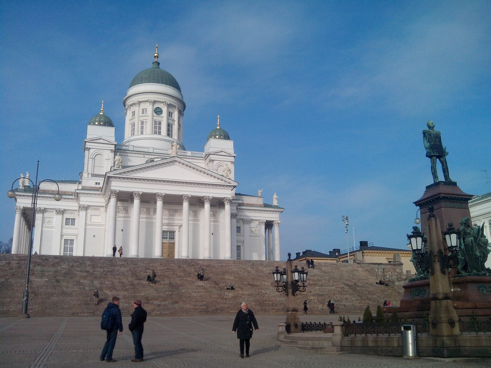
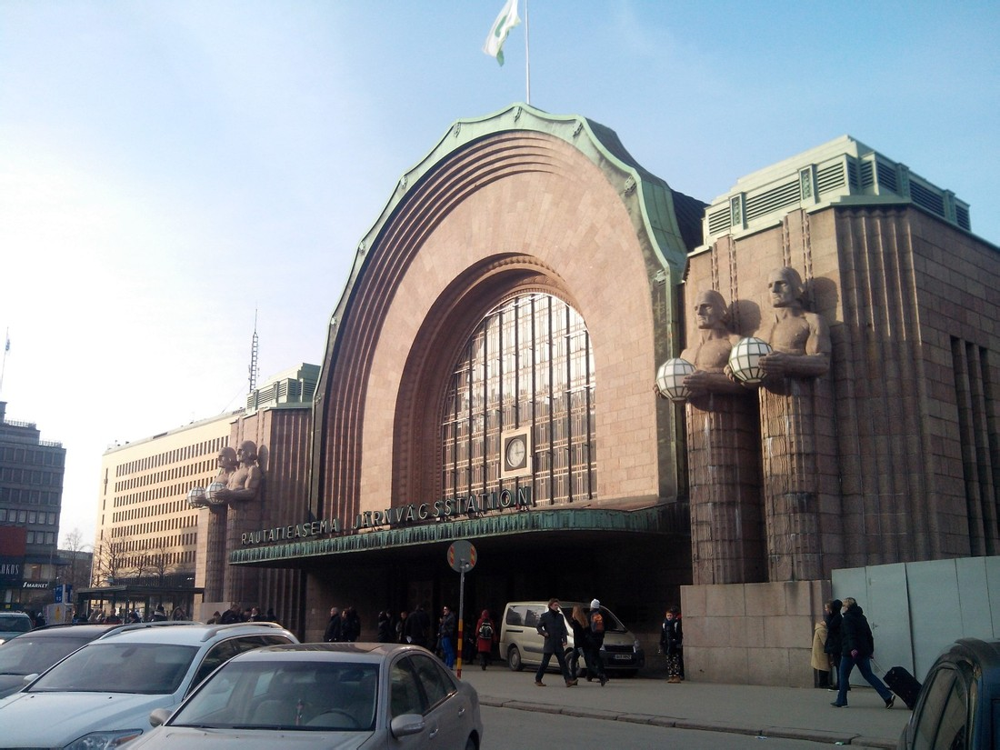
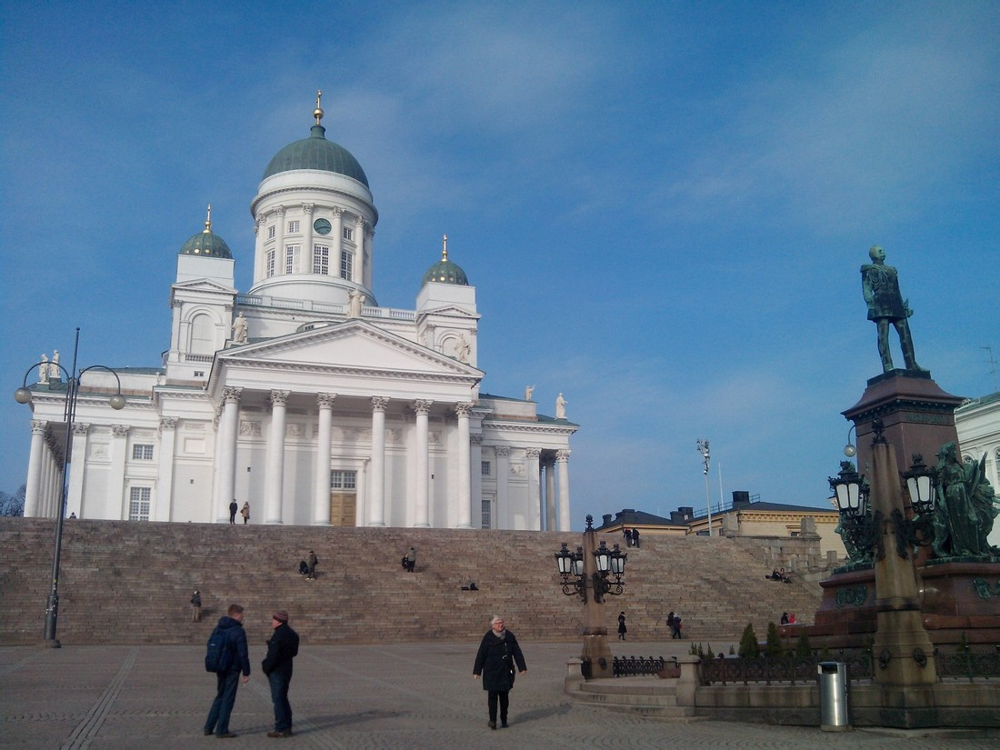
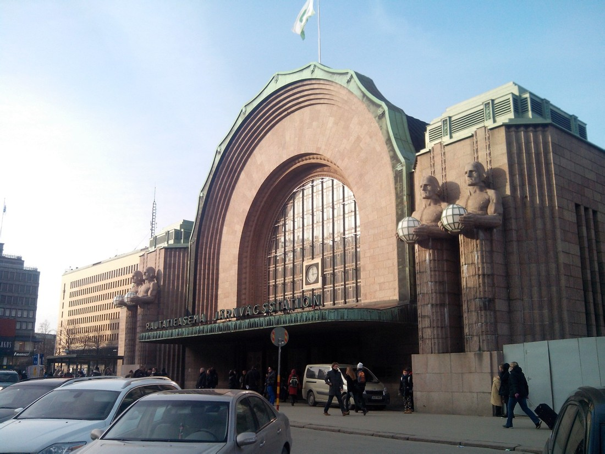

赫尔辛基印象
@2014-03-03
印象比较深刻的几点：
- 自来水可以直接饮用
- 英语普及程度非常高
- 旅馆没有任何一次性物品
来回都可以直飞，飞行时间8小时，抵达赫尔辛基万塔(Vantaa)机场
参(上)议院广场(Senate Square)

赫尔辛基大学(University of Helsinki)

议会大楼(Parliament House)
赫尔辛基中央火车站(Helsinki Central Railway Station)

@2014-03-03
印象比较深刻的几点：
来回都可以直飞，飞行时间8小时，抵达赫尔辛基万塔(Vantaa)机场
参(上)议院广场(Senate Square)

赫尔辛基大学(University of Helsinki)
议会大楼(Parliament House)
赫尔辛基中央火车站(Helsinki Central Railway Station)
